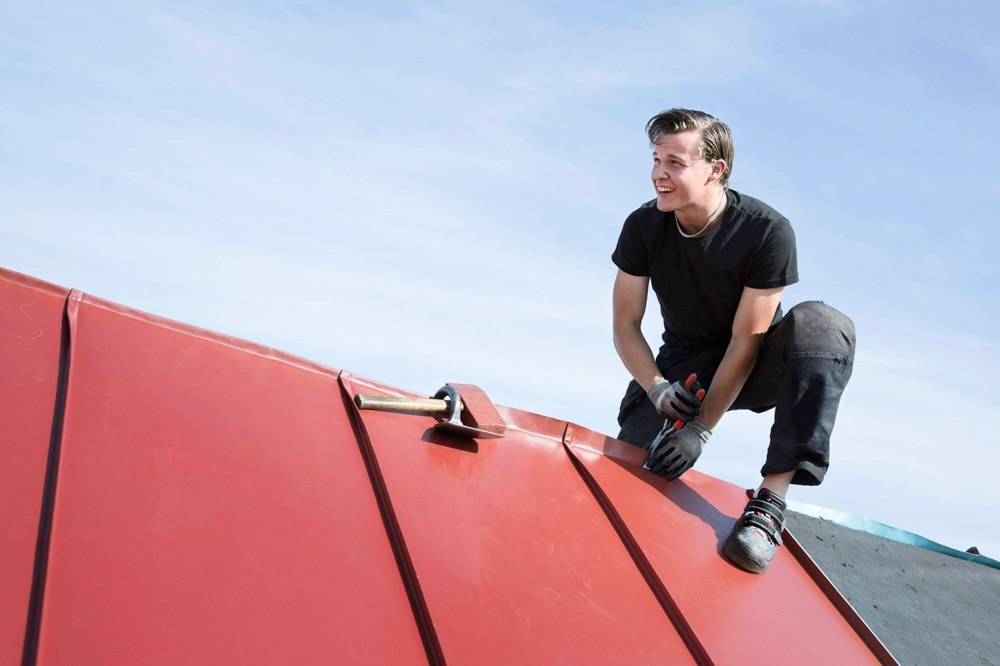

Kommande 2027
Rätt lösning för byggnader som ska stå i hundra år
Stora som små jobb, på villor lika gärna som kyrkor. Direkt kontakt med mig som gör jobbet, från offert till faktura.
Kontakta migeller ring 072-284 85 57

Mitt löfte
Du pratar direkt med plåtslagaren.
När du anlitar J. Norberg Plåtslageri AB har du direkt kontakt med mig som gör jobbet, från offert till faktura. Det betyder att kunskap, erfarenhet och känsla för hantverket följer med genom hela projektet – utan onödiga mellanhänder.
Varje arbete utför jag med stor noggrannhet, respekt för det traditionella hantverket och höga krav på kvalitet.
De jag arbetar med
Mycket kunnig och lösningsorienterad, en riktig konstnär med plåt.
Citat från konsult.
Citat från plåtkonsult.
Citat från antikvarie.
Mitt hantverk
Det här gör jag
Svep för att se alla fyra



Arbetssätt
Så jobbar jag
-
01
Samtal
Du berättar vad som behövs. Jag lyssnar och ställer frågorna som avgör rätt lösning.
-
02
Platsbesök
Jag tittar på byggnaden, underlaget och detaljerna på plats innan något bestäms.
-
03
Lösning och offert
Jag räknar, väljer lösning och lämnar en tydlig offert.
-
04
Utförande
Jag utför arbetet med noggrannhet och respekt för byggnaden, och du har mig som kontakt hela vägen.

Hantverkaren
John Norberg
Jag heter John Norberg och driver J. Norberg Plåtslageri AB, med passion för traditionellt hantverk och hög kvalitet.
- SM-silver 2016 Andra plats i SM i plåtslageri.
- Ambassadör för PVF Plåt & Ventföretagen, branschens organisation.
- Stipendium 2023 Utbildningsresa till VMZINC i Frankrike.
10 år på Bång & Lewerth Jag har restaurerat kulturhistoriskt värdefulla byggnader och haft förtroendet att arbeta på:
- Högalidskyrkan
- S:t Johannes kyrka
- Stockholms stadshus
- Utrikesdepartementet
- Riddarholmskyrkan
- Engelbrektskyrkan
- Sollentuna kyrka
Mästarbrev Mitt mål är att föra det traditionella hantverket vidare och ta mitt mästarbrev, planerat till början av 2027.

Pågående arbete
Villa Bergabo
Just nu arbetar jag med restaureringen av koppardetaljerna på Villa Bergabo på Södra Djurgården. Arbetet omfattar demontering av den befintliga kopparen, renovering och anpassning av underlaget samt återmontering av detaljerna.
Läs mer om Villa Bergabo →
Hör av dig
Kontakt
Har du ett projekt? Kontakta mig gärna för att diskutera arbetet.
John Norberg
Stockholm med omnejd